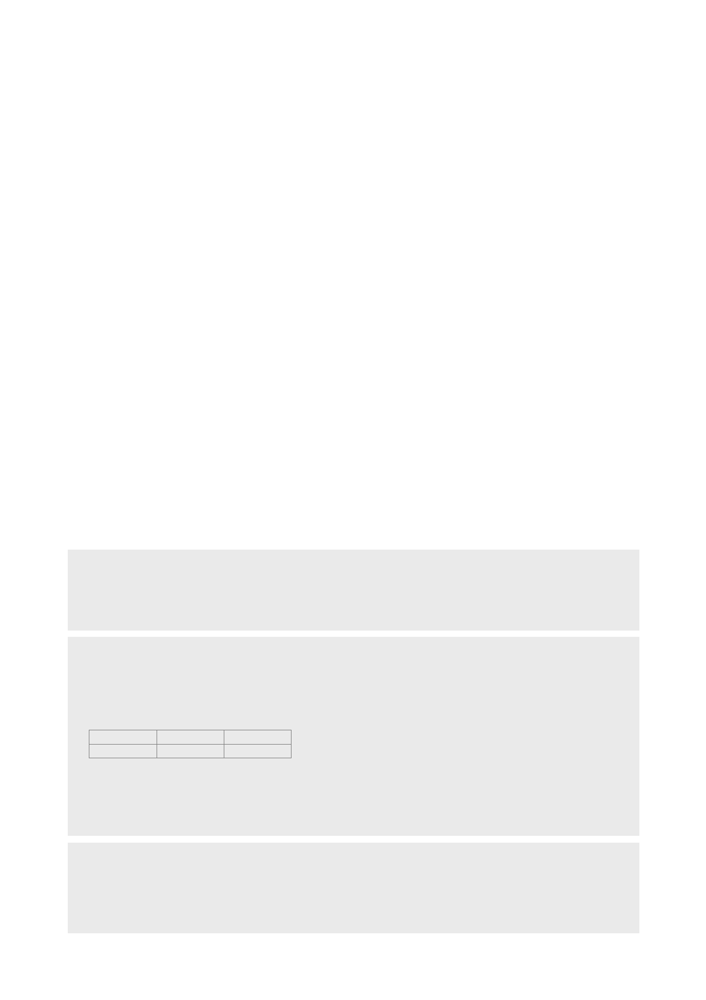

■ Compliance notice
당사는 2018년 3월 28일 현재 현대제철, POSCO, 고려아연, 풍산 종목의 발행주식을 1%이상 보유하고 있지 않습니다.
당사는 동 자료의 내용 일부를 기관투자가 또는 제3자에게 사전에 제공한 사실이 없습니다.
동 자료의 금융투자분석사와 배우자는 상기 발행주식을 보유하고 있지 않습니다.
당사는 현대제철, POSCO, 고려아연 발행주식을 기초자산으로 하는 ELW(주식워런트증권)를 발행 중이며, 당해 ELW에 대한 유동성공급자(LP)입니다.
■ 기업 투자의견은 향후 12개월간 시장 지수 대비 주가등락 기준임
• 매 수 : 시장 지수 대비 15%p 이상의 주가 상승 예상
• 중 립 : 시장 지수 대비 -15∼15%p의 주가 등락 예상
• 비중축소 : 시장 지수 대비 15%p 이상의 주가 하락 예상
• 중립 및 비중축소 의견은 목표가 미제시
■ 투자등급 비율 (2017.12.31 기준)
매수
중립
79.6%
19.9%
※ 최근 1년간 공표한 유니버스 종목 기준
비중축소(매도)
0.5%
■ 업종 투자의견은 향후 12개월간 해당 업종의 유가증권시장(코스닥) 시가총액 비중 대비 포트폴리오 구성 비중에 대한 의견임
• 비중확대 : 해당업종의 포트폴리오 구성비중을 유가증권시장(코스닥)시가총액 비중보다 높이 가져갈 것을 권함
• 중 립 : 해당업종의 포트폴리오 구성비중을 유가증권시장(코스닥)시가총액 비중과 같게 가져갈 것을 권함
• 비중축소 : 해당업종의 포트폴리오 구성비중을 유가증권시장(코스닥)시가총액 비중보다 낮게 가져갈 것을 권함
■ 본 자료는 고객의 증권투자를 돕기 위하여 작성된 당사의 저작물로서 모든 저작권은 당사에게 있으며, 당사의 동의 없이 어떤 형태로든 복제, 배포, 전송,
변형할 수 없습니다.
■ 본 자료는 당사 리서치센터에서 수집한 자료 및 정보를 기초로 작성된 것이나 당사가 그 자료 및 정보의 정확성이나 완전성을 보장할 수는 없으므로 당사
는 본 자료로써 고객의 투자 결과에 대한 어떠한 보장도 행하는 것이 아닙니다. 최종적 투자 결정은 고객의 판단에 기초한 것이며 본 자료는 투자 결과와
관련한 법적 분쟁에서 증거로 사용될 수 없습니다.
■ 이 자료에 게재된 내용들은 작성자의 의견을 정확하게 반영하고 있으며, 외부의 부당한 압력이나 간섭없이 작성되었음을 확인합니다.